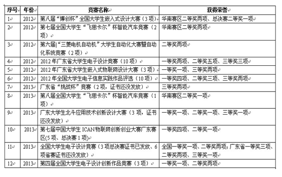

学风是治学精神、态度、方法，是师生整体精神面貌的综合反映。优良的学风可以保证和促进学生圆满地完成学业,可以为我院塑造一个良好的学习氛围。我院学生工作办公室认真贯彻落实我校关于加强学风建设的有关决定，以《华南理工大学广州学院学风建设方案》为指导思想，以《电子信息工程学院、中兴通信工程学院学风建设方案》为工作抓手，深入开展我院2013年的学风建设工作，初步取得良好的效果。
为加强对本年度我院学风建设工作的领导统筹、组织协调，确保学风建设活动的高效开展，根据《华南理工大学广州学院学风建设方案》（华广学[2013]13号）文件精神，成立了我院学风建设工作领导小组，组长由院长何志伟担任，副院长黄皆雨、学生工作办公室主任常虹虹、中兴通信工程学院院长助理秦雪峰担任副组长，成员由各年级辅导员以及班主任组成。
通过学风建设工作的开展，使学生普遍达到学习目的更加明确，实现由“要我学”到“我要学”的根本转变，学习成绩明显进步，实践能力明显提高的目标。2011级、2012级、2013级分别开展了早读的活动，从开始早读以来，同学们表现出非常高的积极性，辅导员、班主任也经常来到同学们中间陪大家早读，并鼓励大家充分利用好早上这段黄金时间，练好英语口语，提高英语水平，并且把这种优良学风发扬下去。为了把这种良好的学风保持并发扬下去，其中2012级针对早读还评选了“早读优秀班级”和“早读优秀个人”。对于毕业班学生，虽然课程不多但仍有部门实操和理论课程，因此辅导员、各班班主任对本班上课出勤率进行考勤，并对旷课、迟到、早退的情况做好记录和汇总。
我院党总支重视榜样建设及组织引领，发挥党支部、党员和入党积极分子的作用，在学生中起到模范带头的作用。各学生支部坚持每一个月一次组织生活，根据各个时期情况制定学习计划，积极开展学习讨论和心得体会交流，讨论如何将学风建设落到实处等，特别关注“学习困难”学生的学习情况，并建立学习档案，帮助他们提高学习成绩。
在学校党委开展的“百名学生标兵”评选活动中，我院2010级谢树帆荣获“十大学习标兵”称号；2010级林科荣、郑俊勇、高雄荣获“十大创新标兵”称号；2011级吴莹、2010级陈彦波荣获“十大共青团员标兵”称号；2010级蓝汉锐荣获“十大自强标兵”称号；2010级张瀚杰荣获“十大优秀学生党员标兵”称号；2010级王涛、陈德豪荣获“十大优秀学习标兵称号”。
在2012-2013学年综合测评工作中，2010级王涛、黄孔辉、林俊良，2011级钟柱坚、黄志彬、杨媚共六名同学荣获优秀学生标兵称号；2010级通信工程（1）班荣获先进班集体标兵称号；2010级自动化（2）班、通信工程（2）班，2011级通信工程（1）班,2012级自动化（1）班、通信工程（5）班五个班级获得先进班集体称号；此次综合测评中还涌现出一批优秀三好学生、优秀学生干部、三好学生等337名先进个人。
把握专业特色，组织开展专业认识、专业素质培养等主题班会及学术交流会、学术讲座等，先后开展有“通信与网络的发展趋势及通信技术人才职业发展之路”、“走进手机安卓世界”、“电子商务的真相”、“嵌入式物联网技术体验与职业规划”、“成长畅想曲”等主题讲座，培养学生对学习的兴趣，引导班级开展学习、复习及专业项目驱动学习等，提高学生学习的质量。定期召开学生党支部及团总支、学生会干部会议、班干部会议，通过及时了解学生的思想动态，做到发现问题并及时解决问题。在新生军训过程中，我院2013级新生取得了优异的军训成果，80人获得军训先进个人荣誉称号23间学生宿舍获得“内务卫生优秀宿舍”荣誉称号等，增强了新生对新环境的集体荣誉感，为之后的学习、生活奠定了良好的基础。
四、六级考试及期末考试前，我院党员学生自发组织了以“诚实做人 诚信应考 你我参与”为主题的考前纪律及诚信教育活动。党员学生向同学们讲解改革后四、六级考试的注意事项及期末考试的纪律要求，并说明组织这样的考前纪律和诚信教育，一方面是让同学们树立公平竞争意识，尊重他人劳动成果，以诚信考试为荣，以违纪作弊为耻；另一方面是为了督促同学们充分复习，自信应考，考出真实水平，检验自己的学习情况。会后，党员同志组织了同学们在诚信考试横幅上签名言志。各班班主任老师在学院的带领下也非常重视班级学风、考风的建设，开展了各种形式的学风、考风建设主题活动，包括和同学们谈话谈心，并针对同学们的学习和生活召开相应的主题班会。如2012级自动化（2）班韦莉莉老师坚持每个月至少召开一次班会，听同学们汇报学习和生活情况；2012级通信（6）班班主任赵赫男老师经常利用网络等方法与同学们沟通交流，鼓励同学们开展各种的互助学习、自主复习。
开展学风建设以来，学生的考试不及格率、考试违纪率，旷课、迟到、早退率有了明显的降低，学生自主学习的积极性较高，课堂纪律也有了显著的转变，学生中无发现通宵上网及夜不归宿的现象。2013届毕业生获得学位率为97.88% ，较2012届提高了1.98% 。四、六级考试2011-2012学年实考人数为1354人，通过人数231人，通过率17.06%；2012-2013学年实考人数1213人，通过人数143人，通过率11.79%。2013年我院突破了研究生考取率，其中张进考取中南大学软件学院研究生、肖晓佳考取广州大学机械与电气学院研究生。
2013年我院一改往常枯燥无味的思想政治教育模式，通过微博、微信、飞信、视频等网络新媒体，将思想政治贯穿其中，收到良好的效果。与此同时，我院报刊《蓝信》也为我院学子开辟了新的学习交流平台，报刊上将我院特色、品牌活动及时报道，同时设有“风采人物”、“心语之窗”等专栏，树立标杆，引发思考，提高了广大学子的思想高度。我院拥有自己多元化的教育形式，极大地提高了学生们的学习兴趣，达到了思想政治教育的目的。
连续5年坚持举办“风纪之星”评选活动，喜逢我校学风建设年，本届“我的风采由我炫”之风纪之星评选活动在评选环节进行了优化，共分为课堂纪律考勤、宿舍卫生评比、个人风采展示三个评选环节，活动历时长达一个多月，共有350余名学生报名参加，最后40名学生脱颖而出，被评为我院2013年度的“风纪之星”。这些获得“风纪之星”的同学不仅在本专业努力学习，在生活中同样努力做到最好，他们对自身的严格要求以及积极向上的行为风尚形成一股正能量传递给每一位同学。让同学们感受到平时行为表现的重要性，为同学们树立了优秀的风纪榜样。该品牌活动提高学院的学风建设，促进学院良好风气形成，同时也彰显了当代大学生积极向上的良好精神风貌。
组织承办、发动学生积极参与我校2013年“科达杯”电子设计大赛暨全国大学生电子设计竞赛校内选拔赛。此外，积极组织学生参加校团委举办的“追忆团的那些年那些事”知识竞赛、“青春梦•中国梦”朗诵大赛、第八届全国大学生智能汽车竞赛校内选拔赛等活动，我院学生代表在各项活动中均表现突出，其中“追忆团的那些年那些事”知识竞赛荣获二等奖。
。
我院已形成了暑期社会实践、青年志愿者服务的管理制度体系，提升了我院社会实践工作的组织、管理和服务能力，有效调动了广大学生参与的积极性和主动性。2013年暑期社会实践中，我院团委积极动员并组织学生参加各种调研、支教、生产实践等活动，共有1149人参加实践，实践报告完成率100%，走访涉及3个省份，18个地级市。
在科技创新方面，我院十分重视培养学生的创新精神和实践能力，大范围调动学生参与科技创新的积极性和主动性，优秀学生课外科技成果不断涌现，共获得省级以上科技竞赛奖项20项，其中国家级9项，一等奖9项；以第一作者发表作品数36篇，获批专利12项。2013年，为提高我院学生的实践能力，让实践与理论相结合，我院特举办了第二届“粤嵌杯”电子芯片设计大赛以及第五届“科达杯”电子设计大赛暨全国大学生电子设计竞赛校内选拔赛，锻炼了学生的实际动手能力，为参加省赛和国赛选拔优秀人才。如下图所示：

2013年我院学风建设虽已圆满结束但仍有不足之处，2014年我们将更加深入探索我院关于学风建设的新思路，进一步促进学生健康成长，全面提高我院学生的综合素质。
电子信息工程学院
中兴通信工程学院
2014年2月22日